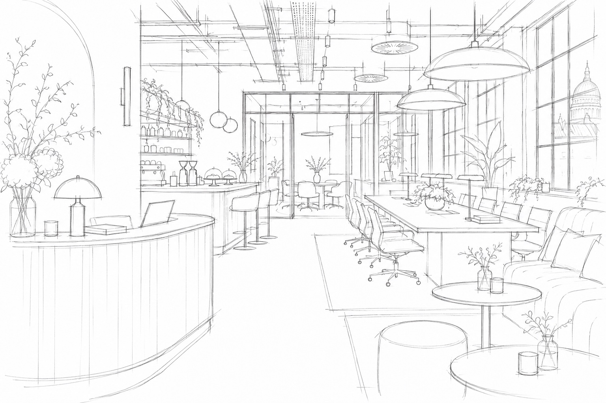

Commercial design & build / Interactive study
Designed with purpose.
Built with precision.
See how an illustrative workplace takes shape, from the first sketch to design development and visualisation. Drag across the image or choose a stage below.


SketchTechnical CADCGI
Illustrative design study, not a completed BAMBU project. Sketch and CGI use the same original concept imagery; CAD is a stylised technical visualisation, not a construction drawing.